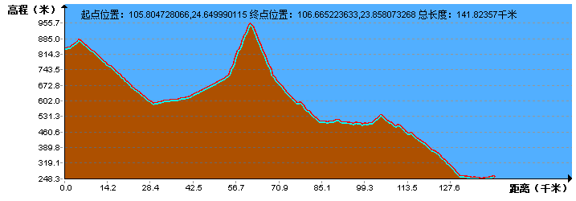
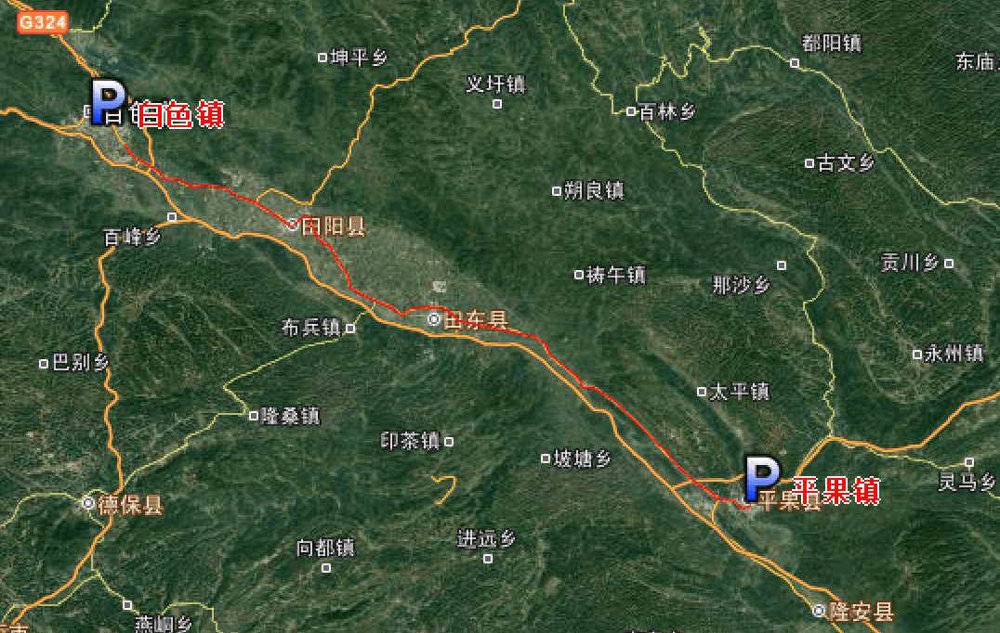
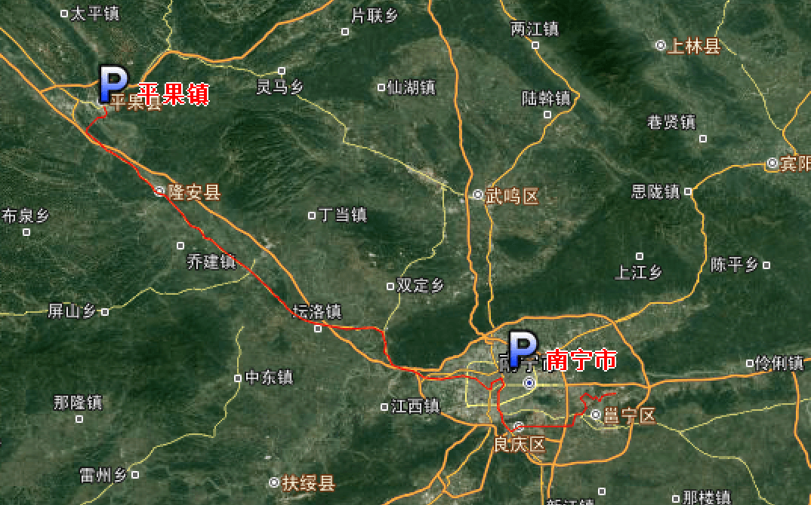

| | | | | |
| - | - | - | - | - |
|<b>别名</b>|桂||<b>著名景点</b>|桂林山水、银滩、青秀山、德天瀑布、白浪滩、桂平西山|
|<b>行政区类别</b>|自治区||<b>机 场</b>|南宁吴圩国际机场、桂林两江国际机场等|
|<b>所属地区</b>|中国华南||<b>火车站</b>|南宁东站、桂林北站、柳州站等|
|<b>下辖地区</b>|14个地级市||<b>车牌代码</b>|桂A-桂R|
|<b>电话区号</b>|（+86）0770-0779||<b>GDP</b>|20396.25亿元(2017年）|
|<b>邮政区码</b>|530000||<b>人均GDP</b>|41752元|
|<b>地理位置</b>|中国南部沿海地区||<b>高等院校</b>|广西大学、广西师范大学|
|<b>面 积</b>|23.67万平方千米||<b>名 人</b>|冯子材、刘永福、李宗仁、韦国清|
|<b>人 口</b>|5579.12万（2016年末户籍）、4885万（2017年末常住）||<b>主要海港</b>|防城港、北海港、钦州港|
|<b>方 言</b>|桂柳话、粤语、壮语、客家语、平话、苗语、瑶语、湘语、闽语等||<b>主要口岸</b>|东兴口岸、凭祥口岸、龙邦口岸|
|<b>气候条件</b>|热带季风气候、亚热带季风气候||<b>著名特产</b>|金花茶、朗姆酒、螺蛳粉|
|-|-||<b>现任领导</b>|党委书记鹿心社，区主席陈武|
| <b>广西生活文化</b> | <b>广西特色文化</b> | <b>广西曲艺文化</b> | <b>广西建筑文化</b> | <b>广西宗教文化</b> |
| - | - | - | - | - |
| <a href="javascript:;" onclick="live(this);">习俗/民俗</a> | <a href="javascript:;" onclick="feature(this);">广西壮锦</a> | <a href="javascript:;" onclick="art(this);">广西壮剧</a> | <a href="javascript:;" onclick="building(this);">程阳风雨桥</a> | - |
| <a href="javascript:;" onclick="live(this);">方言文化</a> |-| <a href="javascript:;" onclick="art(this);">瑶族长鼓舞</a> | <a href="javascript:;" onclick="building(this);">梧州骑楼城</a> | - |
| <a href="javascript:;" onclick="live(this);">节日文化</a> |- | <a href="javascript:;" onclick="art(this);">广西彩调</a> | - | - |
| <a href="javascript:;" onclick="live(this);">嫁娶文化</a> |-| <a href="javascript:;" onclick="art(this);">广西桂剧</a> |-|-|
| <a href="javascript:;" onclick="live(this);">饮食文化</a> |-| <a href="javascript:;" onclick="art(this);">刘三姐歌谣</a>|-|-|
| <a href="javascript:;" onclick="live(this);">广西禁忌</a> |-|<a href="javascript:;" onclick="art(this);">桂南采茶戏</a>| -|-|
## <i class="fa fa-file-text-o"></i>&nbsp;目录（Table of Contents）
+ [I. 总路线图](#one)
+ [II. 景点](#two)
+ [III. 路线规划](#three)
- [1、安龙县 - 旧洲镇](#1)
- [2、田林县 - 白色县](#2)
- [3、白色县 - 平果县](#3)
- [4、平果县 - 南宁市](#4)
- [5、南宁市 - 横县](#5)
- [6、横县 - 玉林市](#6)
- [7、玉林市 - 岑溪市](#7)
<h2 id="one"><i class="fa fa-circle-o-notch fa-spin"></i>&nbsp;总路线图</h2>
<h2 id="two"><i class="fa fa-star-o"></i>&nbsp;景点</h2>
<h2 id="three"><i class="fa fa-spinner fa-pulse"></i>&nbsp;路线规划</h2>
<h4 id="1">1、安龙县 - 旧洲镇&nbsp;&nbsp;<i class="fa fa-bicycle fa-2x"></i></h4>
<h4 id="2">2、田林县 - 白色县&nbsp;&nbsp;<i class="fa fa-bicycle fa-2x"></i></h4>

<h4 id="3">3、白色县 - 平果县&nbsp;&nbsp;<i class="fa fa-bicycle fa-2x"></i></h4>

<h4 id="4">4、平果县 - 南宁市&nbsp;&nbsp;<i class="fa fa-bicycle fa-2x"></i></h4>

<h4 id="5">5、南宁市 - 横县&nbsp;&nbsp;<i class="fa fa-bicycle fa-2x"></i></h4>
<h4 id="6">6、横县 - 玉林市&nbsp;&nbsp;<i class="fa fa-bicycle fa-2x"></i></h4>
<img data-src="../imgs/region-line/guangxi/6t.png" title="6、横县 - 玉林市"/>
<h4 id="7">7、玉林市 - 岑溪市&nbsp;&nbsp;<i class="fa fa-bicycle fa-2x"></i></h4>